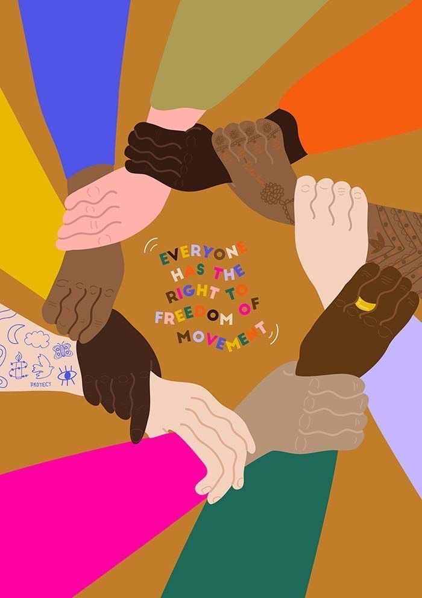
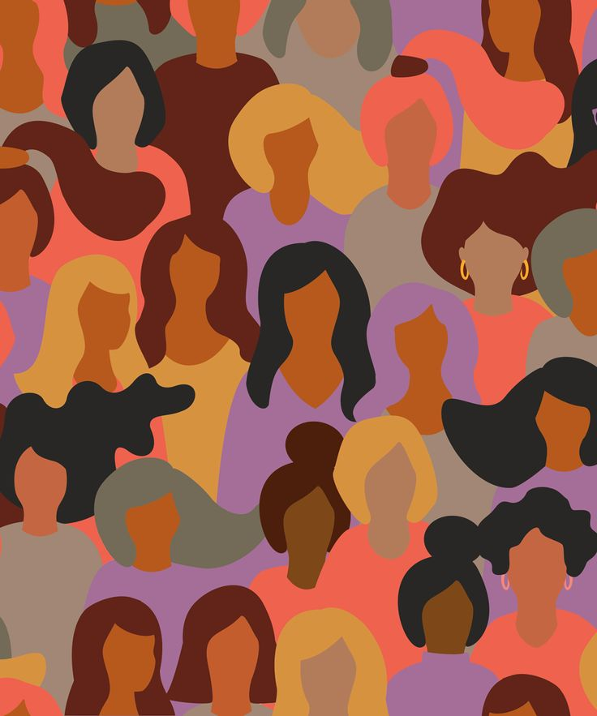

Жіночий голос
у літературі

Феміністична література в Україні та світі
Феміністична література
художня чи наукова література, яка підтримує феміністичні цілі визначення, встановлення і захисту рівних громадянських, політичних, економічних і соціальних прав людини для жінок.


Ідея проекту
Метою нашого проєкту є дослідити жіночі голоси у контексті зарубіжної та української літератури в різних періодах та культурах. Проаналізувати як у творах висвітлювались важливі теми: гендерна нерівність, другорядність жінки, обмеження самовираження та загалом роль жінки у світі.
Учасниці проекту
Швед Юлія, Стасюк Інна, Загребельна Вікторія